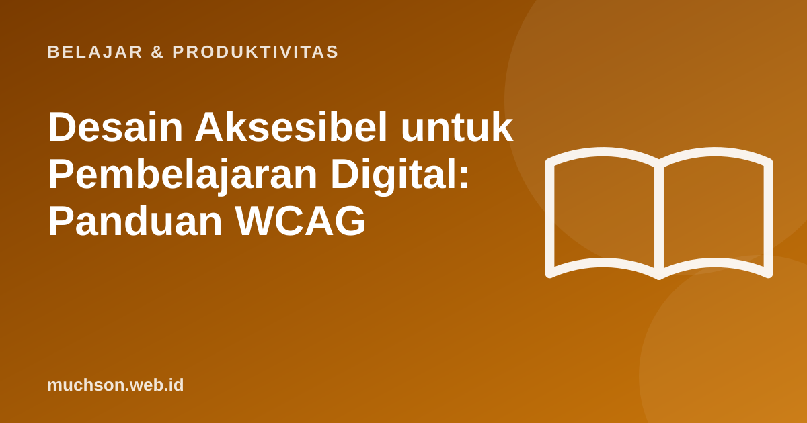

Beranda › Artikel › Belajar & Produktivitas
Belajar & ProduktivitasDesain Aksesibel untuk Pembelajaran Digital: Panduan WCAG
Platform belajar yang tidak bisa dipakai oleh sebagian peserta bukan hanya masalah teknis, melainkan masalah keadilan. Aksesibilitas membuat materi dapat digunakan oleh orang dengan penglihatan terbatas, buta warna, gangguan pendengaran, atau yang hanya memakai papan ketik.

Empat prinsip WCAG
Periksa kontras warna
Lima kesalahan paling umum
Daftar periksa platform belajar
Catatan
Alat pemeriksa otomatis hanya menangkap sebagian masalah. Uji manual dengan papan ketik dan pembaca layar, dan libatkan pengguna dengan kebutuhan khusus bila memungkinkan.
Tanya jawab
Apa itu AA dan AAA pada WCAG?
Tingkat kepatuhan. AA adalah target umum yang dianggap wajar. AAA lebih ketat dan tidak selalu mungkin untuk semua konten.
Apakah aksesibilitas hanya untuk penyandang disabilitas?
Manfaatnya lebih luas: orang yang menggunakan perangkat kecil, di bawah sinar matahari, dengan tangan terluka, atau koneksi lambat juga terbantu.
Dari mana memulai?
Mulai dari kontras, teks alternatif, dan keyboard. Lalu jadikan aksesibilitas bagian dari proses desain sejak awal.